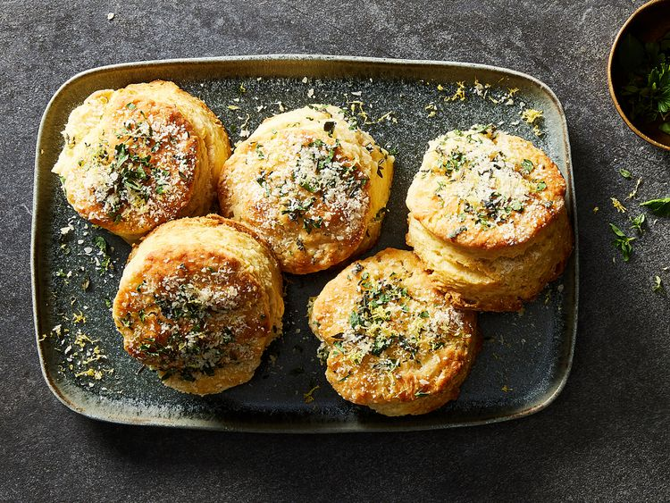

Prep: 25 min Cook: 15 min Total: 40 min Servings: 14
Herby ricotta biscuits could be a savory baked item made with a combination of ricotta cheese and various herbs.
The herbs would contribute a fragrant and savory quality to the biscuits, enhancing their overall taste.
These biscuits could be served as a side dish, appetizer, or accompaniment to various meals.
Ingredients
- 2 1/4 cups all-purpose flour
- 1 tablespoon baking powder
- 1 teaspoon baking soda
- 1 teaspoon sea salt
- 1 stick (8 tablespoons) very cold butter
- 3/4 cup full-fat ricotta cheese
- 1/2 cup very cold water
- 1/4 cup finely chopped fresh herbs
- 1/2 teaspoon lemon zest
- 2 tablespoons melted butter
- 2 tablespoons grated Parmesan cheese
Steps
- Preheat oven to 425 degrees F (220 degrees C). Line a large baking sheet with parchment paper.
Whisk together flour, baking powder, baking soda, and fine sea salt in a large bowl.
- Coat whole stick of butter in flour mixture. Grate butter on the large holes of a box grater into bowl. (If butter
starts to melt, coat butter in flour mixture again and continue grating.) Use your fingers to toss butter in
flour mixture until all butter pieces are separated and coated in flour. Mixture should resemble coarse crumbs.
- Whisk together ricotta and water in a small bowl; add to flour mixture. Gently fold to bring dough together. Dough
should be moistened but still crumbly. If dough is too dry, add more cold water, 1 tablespoon at a time, until fully
moistened.
- Turn dough out onto a lightly floured work surface. Lightly knead three or four times until dough comes together. Sprinkle
with flour; pat to 3/4-inch thickness. Cut dough into four equal portions. Stack portions, press down, and pat again to
form a 3/4-inch-thick rectangle. Repeat process three times, adding flour as needed.
- Press a 2 1/2- to 3-inch biscuit cutter straight down into dough to cut out biscuits. Gently knead scraps together, pat
to 3/4-inch thickness, and repeat cutting. Arrange on prepared baking sheet (biscuits should be barely touching).
- Bake in the preheated oven until tops are crisp and golden brown, 15 to 16 minutes. Let cool on baking sheet 5 minutes.
- Stir together fresh herbs and lemon zest in a small bowl. Brush tops of baked biscuits with melted butter; sprinkle with herb
mixture and Parmesan cheese.